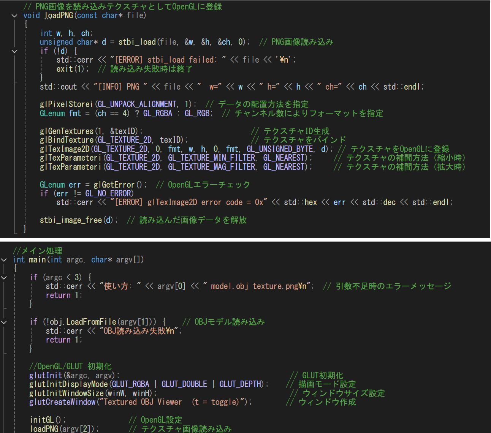
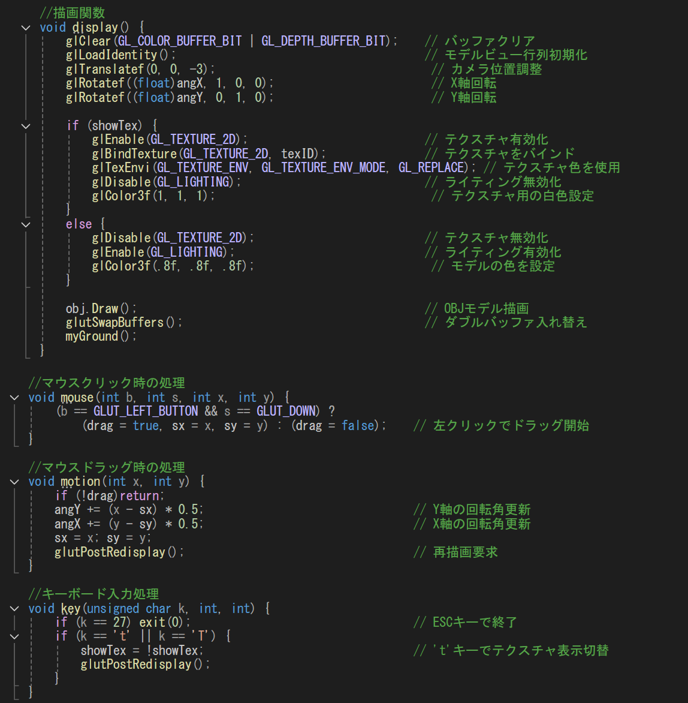

概要
本作品は、コントローラーを使用して、赤くなった鐘の部分を記憶し、順番通りうつ記憶ゲームです。
また、ランキング機能やリザルト機能も実装されています。

本作品は、コントローラーを使用して、赤くなった鐘の部分を記憶し、順番通りうつ記憶ゲームです。
また、ランキング機能やリザルト機能も実装されています。
以下の動画は実行結果の動画になります。
開発環境：Visual Studio
使用言語：C++
使用技術：OpenGL / GLUT / テクスチャマッピング / 入力制御
使用ライブラリ：stb_image、自作ライブラリ（ObjLoadLib）
その他：マウス操作による視点回転、テクスチャ表示切り替え機能を実装
3Dモデルの読み込み・描画・テクスチャ適用に加え、ライティングによる陰影表現の仕組みを理解することを目的としました。
また、マウス操作やキーボード入力を通じて、ユーザーの操作に応じて変化する3D表現の実装を学ぶことを目的としました。
既存のOBJモデル描画処理と同様の構造をベースとし、描画の流れを理解した上で機能の拡張を行いました。
main関数の初期化処理に画像読み込み処理を組み込み、loadPNG関数を用いてテクスチャを生成・適用することで、
モデルに画像を貼り付けられるようにしました。これにより、従来のモデル表示の仕組みを活かしながら、見た目の表現を向上させることができました。

display関数では、テクスチャの有無に応じてライティングの切り替えを行うよう工夫しました。
これにより、画像を表示する場合と陰影を表現する場合で見た目が適切に変わるようにしています。
また、マウス操作ではドラッグによる回転処理を実装し、直感的にモデルの向きを変更できるようにしました。
さらに、キーボード入力によってテクスチャの表示・非表示を切り替えられるようにすることで、見た目の違いを確認しやすくしています。

今回の制作を通して、3Dモデルの表示においてテクスチャやライティングによって見た目が大きく変化することを理解することができました。
また、マウス操作やキーボード入力を組み合わせることで、ユーザーの操作に応じた表現が可能になることを学びました。
これらの学びを活かし、今後はより見た目や操作性にこだわった3D表現の実装に取り組んでいきたいと考えています。